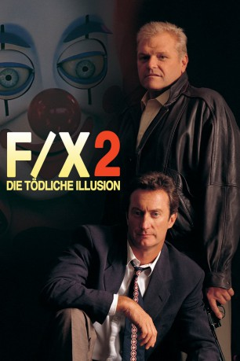

#10562 F/X 2 - Die tödliche Illusion
Alternativ: F/X2 (Englischer Titel)
 
 IMDB-Wertung: 5.8 / 10
IMDB-Wertung: 5.8 / 10  Metascore: 48
Metascore: 48 
Rollie Tyler, inzwischen erfolgreicher Spielzeugdesigner, soll für den Ex-Mann seiner Frau wieder mal einen Spezialeffekt bauen, um einen Killer zu fangen. Dieser Effekt wird jedoch ausgenutzt, um Rollies Freund zu töten. Bald darauf jagt man auch Rollie und er muß um sein Leben fürchten.Doch wozu hat man Freunde...
Jahr: 1991
Dauer: 108 Minuten
FSK: 16
Land: USA Studio: Orion PicturesTonspuren:
Untertitel:
Auflösung: 1080p (1920x1040) Größe: 7976 MB
Genre: Action, Thriller
Regisseur: Richard Franklin
Drehbuch: Robert T. Megginson, Gregory Fleeman, Bill Condon
Soundtrack: Lalo Schifrin
Darsteller:
 Bryan Brown als Rollie Tyler
Bryan Brown als Rollie Tyler Brian Dennehy als Leo McCarthy
Brian Dennehy als Leo McCarthy Rachel Ticotin als Kim Brandon
Rachel Ticotin als Kim Brandon Joanna Gleason als Liz Kennedy
Joanna Gleason als Liz Kennedy Philip Bosco als Ray Silak
Philip Bosco als Ray Silak Kevin J. O'Connor als Matt Neely
Kevin J. O'Connor als Matt Neely- Tom Mason als Mike Brandon
- Dominic Zamprogna als Chris Brandon
- John Walsh als Rado
- Peter Boretski als Becker
 Tony De Santis als Det. Santoni
Tony De Santis als Det. Santoni- Dee McCafferty als Chambliss
 Phillip Jarrett als IAD Cop #1
Phillip Jarrett als IAD Cop #1- James Stacy als Cyborg
- Leland Crooke als Movie Director
 Biff Yeager als Police Sergeant
Biff Yeager als Police Sergeant Matt Birman als Mobster #3
Matt Birman als Mobster #3- Tony Katsaras als Policeman
- Dennis Scott als Cop #1
- Jossie DeGuzman als Velez
- Lisa Fallon als Kylie
- Larry Perkins als DeMarco
- Philip Akin als Det. McQuay
- Ross Petty als Consigliere
- Jeri Craden als Aunt Kate
- Karie Stone als Beth
- Richard Sali als IAD Cop #2
- Neil Elliot als Movie F / X Man
- Foster Fell als Policeman
- Jack Orend als Wino in Movie
- Jenifer Chatfield als Movie Script Girl
- Kurt Reis als Judge
- Damir Andrei als Defense Attorney
- Charles Leigh Ivey als Defendant
- Caroline Yeager als Desk Sergeant
- Arlene Duncan als Hooker
- Robert Kennedy als Computer Store Clerk
- Dwayne McLean als Mall Guard
- Gerry Quigley als Supermarket Manager
- Harvey Chao als Chinese Vendor
- Harry Booker als Prison Priest
- Bob Clout als Confessional Priest
- Jack Newman als Art Expert
- Walker Boone als Mansion Guard #1
- Michael Rhoades als Mansion Guard #2
- Gene Mack als Mansion Guard #3
- Shane Cardwell als Mobster #1
- Michael Woods als Mobster #2
Datei: X:\3-Trilogie(A-F)\FX - Tödliche Tricks\FX 2 - Die tödliche Illusion (1991, FSK16, 1920x1040).mkv seit 21.01.2019
Festplatte: HD Collection-2(A-Z)-3(A-M)
 Alle Filme aus Gruppe '3-Trilogie(A-F)\FX - Tödliche Tricks'
Alle Filme aus Gruppe '3-Trilogie(A-F)\FX - Tödliche Tricks'